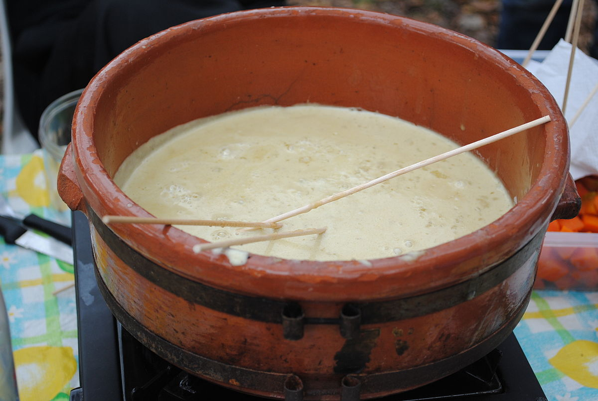

Bañacauda

La Bagna cauda es el plato tipico por exelencia de Piamonte, Italia
Se origina en la zona Bajo Piamonte, Monferrato, y segun la tradicion se consumia despues de la fatiga de la
vendimia t la vinificacion
En Argentina es frecuente que en los dias frios, sobre todo en zonas rurales, se coma este plato a modo Saluzzese, es
decir, con la salsa con una base de crema de leche y no tanto aceite de oliva
Ingredientes
- 5 dientes de ajo
- 5 anchoas
- Aceite extra
- 1/2 lt. de crema de leche
- 1 puñado de nueces
Pasos
- Pelar Ajos y quitar el brote del medio. Colocarlos en el vaso de la licuadora
- Agregar una anchoa para cada diente deajo, agragar una cucharada de aceite de oliva y triturar hasta obtener una pasta
- Colocar pasta en una olla antihaderente y cocinar a fuego minimo
- Luego de unos minutos la pasta cambiara de ccolor a uno mas oscuro, en ese momento agregamos crema de leche.Seguir cocinando a fuego minimo
- Agregar un puñado de nueces picadas y cocinar un poco mas hasta que la crema se reduzca un poco